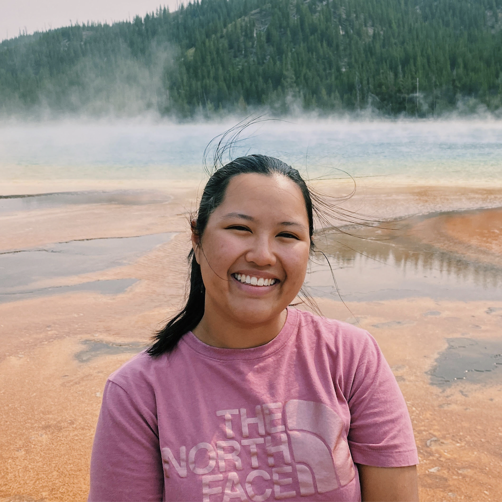

Faye Romero is a Filipino-American evolutionary biologist. She grew up in Sugar Land, Texas and earned her bachelor's degree in molecular biology at UC Berkeley. Currently, she's pursuing a PhD in Ecology and Evolutionary Biology at the University of Rochester in Dr. Nancy Chen's lab, where she is using genetics and computational biology to better understand the decline of endangered species, like the Florida Scrub-Jay. She plans to use her role as a scientist and communicator to increase the representation of Filipinos, Filipino-Americans, and other historically marginalized groups in evolutionary biology.
Learn more about Faye's STEM journey through her conversation with our Education and Research Fellow, Swastika Issar:
Let's start by talking about your childhood and where you grew up.
My parents were born in the Philippines. They met at the University of the Philippines in Manila, got married and moved to the US in 1992 in search of better opportunities. They moved to the San Francisco Bay Area, where my mom got an MBA and my dad did his PhD in geoscience. They were both employed by the oil and gas industry, which is why we moved to Houston, Texas, where I was born.
I grew up in Sugar Land, Texas — which sounds like a fake name, but it's a small city outside of Houston. It's a weird thing being Filipino-American, because you have two different identities. And as a kid you're always trying to figure out "Who am I?" My city was actually pretty diverse, and we were lucky because we had a small community of other Filipinos. Like a lot of immigrant communities, it ended up becoming a large family of 40-odd people. We'd always do things together. This gave us a little haven and connected us to Filipino culture. When we were younger and travel was easier to coordinate, we would spend Christmas and New Year's with extended family in the Philippines.
Tell us about your time as a student. Were there any subjects you particularly loved?
When I was about 13, my parents got a job in Perth, Australia, and we moved there for three years. While leaving friends and community behind was hard, it was a really cool experience. The focus on academics in Australia wasn't as rigorous and competitive — it allowed both me and my parents to step back, relax a bit, and connect with nature. This was also around the time that I started becoming more interested in studying biology.
I did my first two years of high school in Australia, and my last two in Texas. It was a bit of a shock to suddenly jump back into really intense academics. But that period shaped my relationship to science — I'd had time to fall in love with the natural world before I had to compete in it.
Is there a person who you feel has been influential in choosing your career path?
Growing up, my dad was always really into science. When I was a kid, our bedtime stories were from encyclopedias — we'd learn all about the natural world, from rocks to human anatomy to outer space. So I'd always liked the idea of biology and science, but I'd never really linked it to a career path until I started applying to college. My parents, like many Filipino parents, deeply valued education. My dad was a scientist himself. That made science feel like a viable path in a way that might not have been as obvious for other kids in my community.
What drew you to evolutionary biology and endangered species research?
At Berkeley, I used museum specimens to study how hummingbirds have responded to human-induced environmental change. That project connected me to a much bigger question: how do species respond to a rapidly changing world? Now in my PhD, I'm using genetic and computational tools to understand the decline of the Florida Scrub-Jay, an endangered bird found only in one ecosystem in Florida. What I love about evolutionary biology is that you can use the record written in genomes to understand deep questions about how life adapts, diversifies, and sometimes disappears.
The stakes feel real. When you're studying an endangered species, you're not just doing science — you're potentially contributing to decisions about its survival.
What does representation mean to you in this context?
It matters enormously. Evolutionary biology has a complicated history with race and with exclusion. Being a Filipino-American woman in this field means navigating spaces where people have sometimes been surprised to see me. I want the next generation of Filipino and Filipino-American students to see themselves as scientists — as people who ask big questions about the natural world — because they absolutely are. And we bring something unique: a perspective shaped by cultures with deep connections to the land and the sea, to biodiversity, to the stakes of environmental change.
More from the Filipinas in STEM series:
- Cassidy Childs — Climate Policy and Filipino Roots
- Cynthia Garcia-Eidell — Satellite Science and the Ocean
- Janneli Lea A. Soria — Geologist and Science Educator
- Reinabelle Reyes — Data Science, Physics & Community
- Iris Bea Ramiro — Cone Snails, Copenhagen & Beyond
- Ariane Peralta — Microbiologist, East Carolina University
- Hyacinth Suarez — Marine Biologist, Bohol